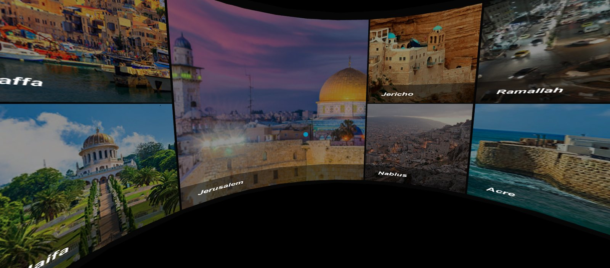
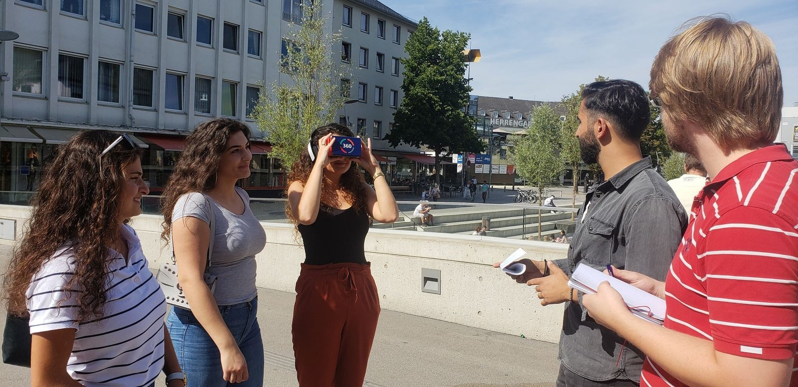

Work / VR / Master Thesis
Glimpses from Palestine
Since 1948, Palestinian refugees have been unable to return home, not even for a visit, and most of their villages have been demolished. This VR application lets users travel through today’s Palestine and back in time, into villages digitally rebuilt from old photographs and maps.

A homeland you can only remember
Palestine has lived in political conflict for decades. For the refugees of 1948 and their descendants, return is impossible, the villages they came from were largely demolished, and with each passing generation the living memory of those places fades.
The design question was delicate: can immersive technology carry a place that no longer exists to the people who are not allowed to stand in it? This was not an entertainment brief. It demanded historical accuracy, emotional care, and a research method that put the diaspora’s own memories at the center.
Interviews across the diaspora
I followed a design case study methodology, grounding every decision in qualitative data:
- Interviews with Palestinians in the diaspora: including people who had lived in the demolished villages themselves.
- Interviews with non-Palestinians: to incorporate outside perspectives and check assumptions.
- Expert interviews conducted inside VR: evaluating the medium with the medium.
- Thinking aloud: to surface user needs and requirements as people moved through the prototype.

Travelling in space, and in time
The application has two journeys. The first moves through space: 360° video from various locations and cities in Palestine today, letting users visit places they cannot physically reach.
The second moves through time: villages that no longer exist were remodeled in 3D from old photographs and historical maps, placed at their true locations. Users stand in the village as it looked before its destruction, a reconstruction, not an imagination.
The capture process combined photogrammetry and 360° video across sites, and the central UX challenge was stitching these massive environments into a continuous, navigable narrative without causing simulator sickness. A spatial UI lets users organically explore the heritage spaces while listening to embedded local oral histories.
Mobile VR was a deliberate choice: the audience is a global diaspora, and the experience had to run on hardware people actually own, and during public exhibitions, performance was tuned until it ran smoothly even on standalone headsets.
The brief was never “build a VR app.” It was: return a demolished village to the people who remember it.design intent, master thesis

From idea to tested prototype
As my master thesis, this project was mine end to end: framing the research question, conducting and analyzing the interviews, designing the experience, building the prototype, and closing the loop with usability testing.
It remains the clearest expression of how I work, rigorous methods applied to a deeply human problem, finished as a working artifact rather than a slide deck.
The research was later published at ACM as “Glimpses from Palestine: Preserving the Inaccessible in VR Technology”, Shawar, Aal & Wulf, carrying the work from prototype to peer-reviewed literature.